P01 · ObraAltaPresupuesto › Página · cabecera
Un solo menú para las acciones del presupuesto
Reunir las ocho acciones en un menú «…» con grupos y conservar Total Ingresos a la vista.
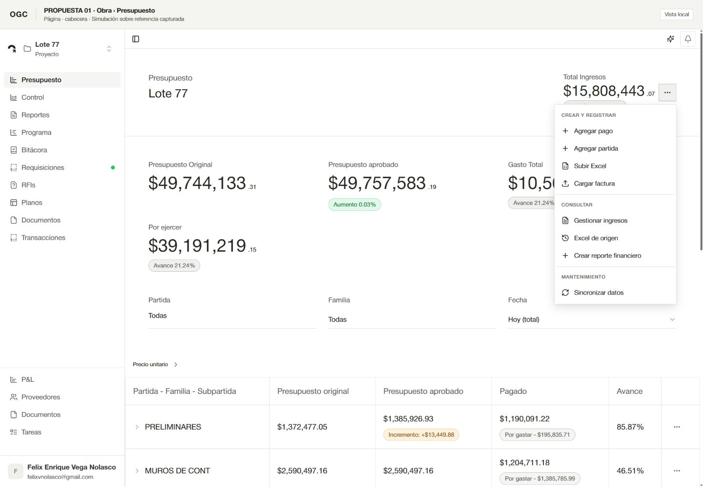
Beneficio: Menos controles visibles y un lugar predecible para las acciones.
Ver móvil, evidencia y condiciones
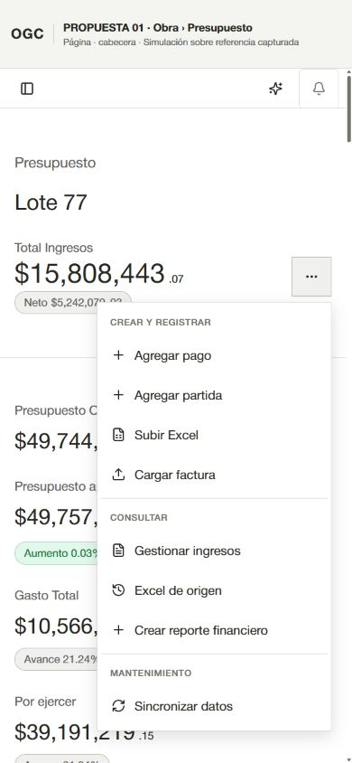
Problema: Excel de origen, Agregar y el menú de acciones compiten en la misma cabecera. En móvil ocupan varias filas.
Conservar: Crear reporte financiero sólo para admin; ingresos según permiso; las cargas conservan sus restricciones. No deshabilitar la consulta del Excel cuando un presupuesto esté incompleto.
src/pages/Presupuesto/PresupuestoPage.tsx
src/components/transactions/AddTransactionMenu.tsx
src/components/Presupuesto/BudgetOriginal.tsx
Presupuesto › Página · filtros y visualización
Filtros alineados y opciones de vista identificables
Una barra compacta con Partida, Familia y Fecha; reunir las opciones de columnas en Vista. En móvil apilar sin ocultar las etiquetas.
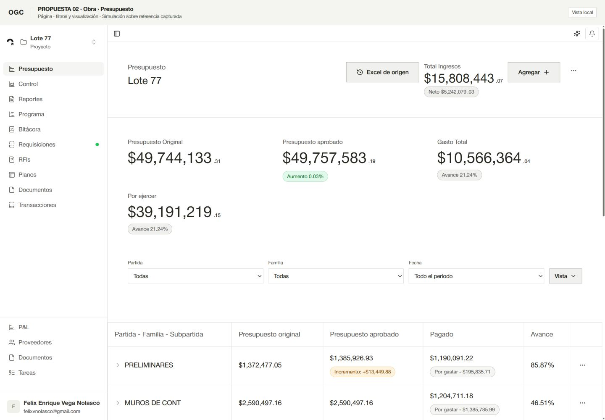
Beneficio: Relacionar filtros y presentación con la tabla que controlan.
Ver móvil, evidencia y condiciones
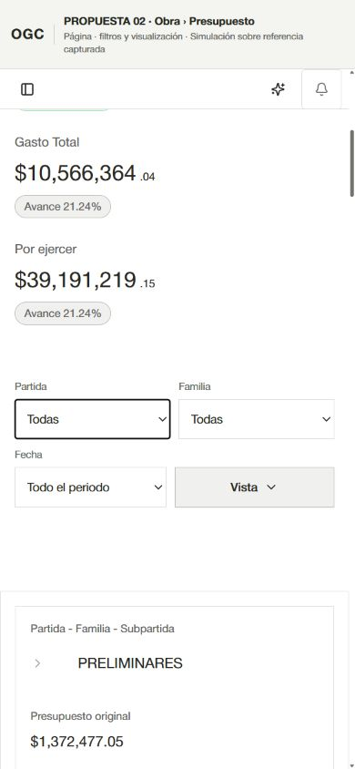
Problema: Los tres filtros ocupan una franja alta y Precio unitario queda aislado debajo.
Conservar: Selección múltiple, búsqueda, chips y limpieza de filtros. El precio unitario sigue siendo una opción de vista, no una acción de edición.
src/pages/Presupuesto/PresupuestoPage.tsx
Presupuesto › Diálogo · Ingresos
Nuevo ingreso visible; importación e historial en un menú
Conservar Nuevo ingreso como principal y reunir Carga masiva e Historial de cargas en «…».
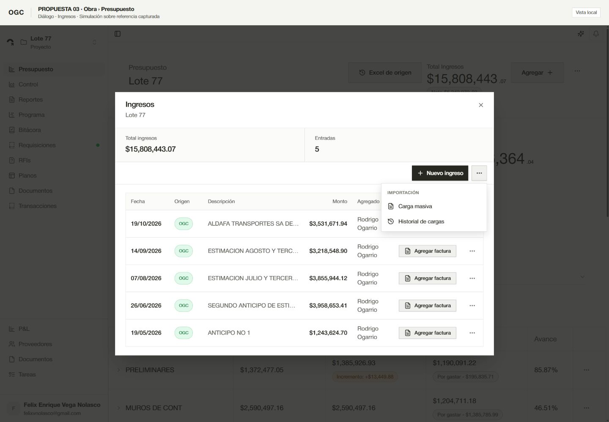
Beneficio: Entrada más clara y cabecera más corta en móvil.
Ver móvil, evidencia y condiciones
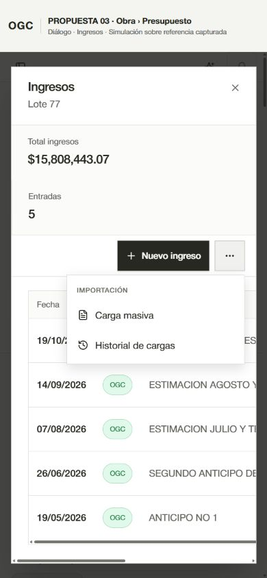
Problema: Tres botones de la misma jerarquía ocupan varias filas dentro del diálogo.
Conservar: El lector conserva la consulta; sólo los roles autorizados ven las acciones de registro y carga. Las acciones de cada ingreso continúan siendo contextuales.
src/components/modals/ingresos-modal.tsx
Presupuesto › Diálogo · Registrar pagos
Controles secundarios compactos en el registro de pagos
Usar un selector de estado compacto, etiquetar Crear proveedor y Agregar partida con la misma escala de controles. Conservar Cancelar y Guardar en el pie.
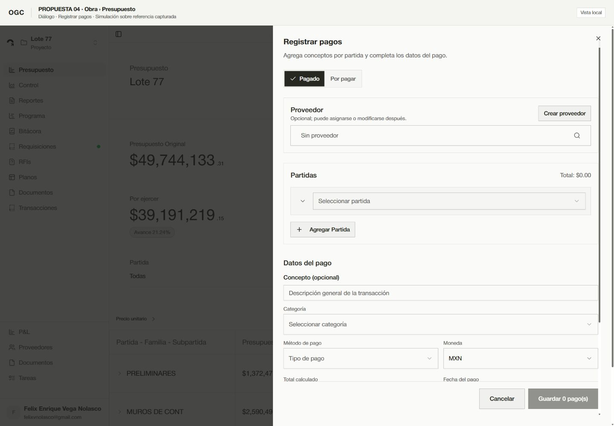
Beneficio: Menos ruido sin agregar pasos al registro.
Ver móvil, evidencia y condiciones
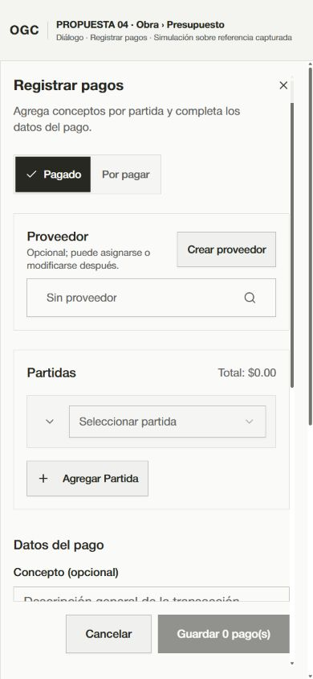
Problema: Pagado/Por pagar y Agregar Partida tienen gran tamaño; Nuevo proveedor es poco explícito.
Conservar: Cálculo del total, múltiples partidas, campos obligatorios y estado deshabilitado de Guardar. El formulario continúa desplazándose dentro del panel.
src/components/modals/add-payment-modal.tsx
Proyectos › Página · cabecera
Nuevo proyecto como acción principal
Un botón Nuevo proyecto y un menú con historial, carga y configuración. Mantener el filtro de ubicación junto al buscador.
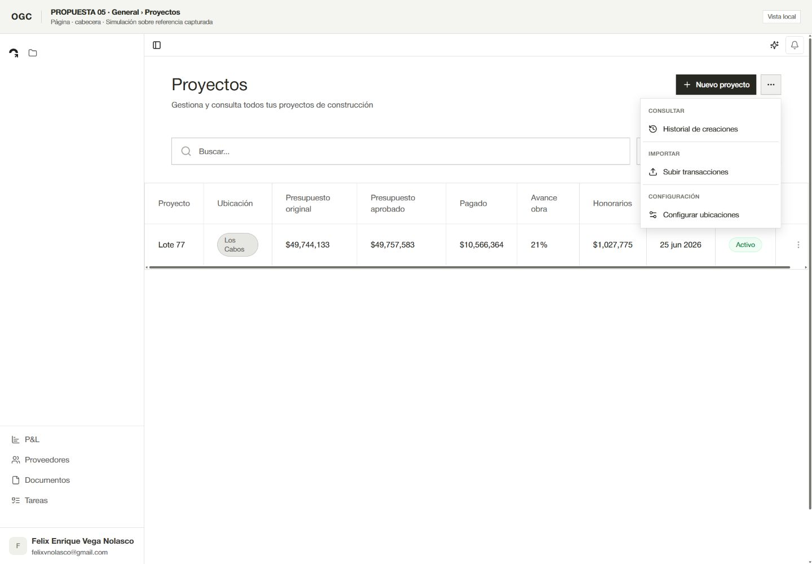
Beneficio: Jerarquía clara y una cabecera más compacta.
Ver móvil, evidencia y condiciones
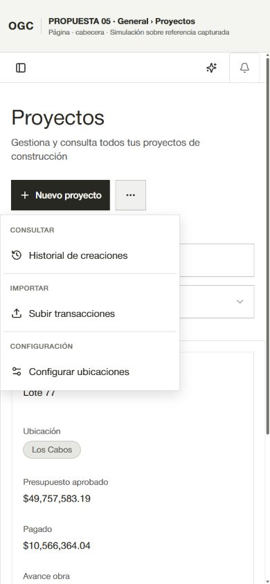
Problema: Creaciones de proyectos, Agregar Proyecto y Subir Transacciones ocupan la cabecera; configurar ubicaciones añade otro botón junto al filtro.
Conservar: Historial accesible para consultar o reanudar creaciones; los permisos de administración no cambian.
src/pages/ProyectosTable/ProyectosTablePage.tsx
Transacciones › Página · cabecera
Separar registro de transacciones y herramientas
Conservar Agregar y agrupar las herramientas en «…». Escribir Sincronizar documentos completo en el menú.
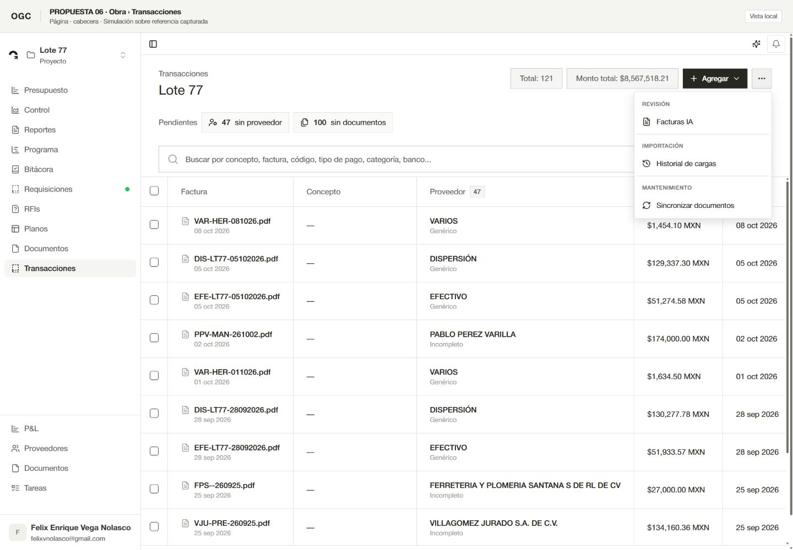
Beneficio: Reducir ancho sin esconder el registro frecuente.
Ver móvil, evidencia y condiciones
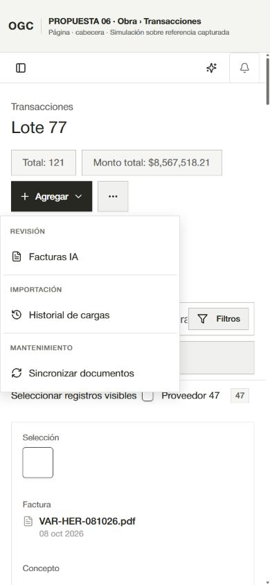
Problema: Cuatro botones amplios compiten con las cifras de la cabecera.
Conservar: Indicadores sin proveedor y sin documentos visibles; permisos por rol y estados de carga; sincronizar no se ejecuta al abrir el menú.
src/pages/ProyectoTransaccionesTable/ProyectoTransaccionesTablePage.tsx
Transacciones › Panel · filtros
Filtros avanzados sin desplazar la lista
Abrir los filtros en un panel contextual con etiquetas y conservar un contador de filtros activos junto al buscador. Mostrar chips para quitar filtros individuales.
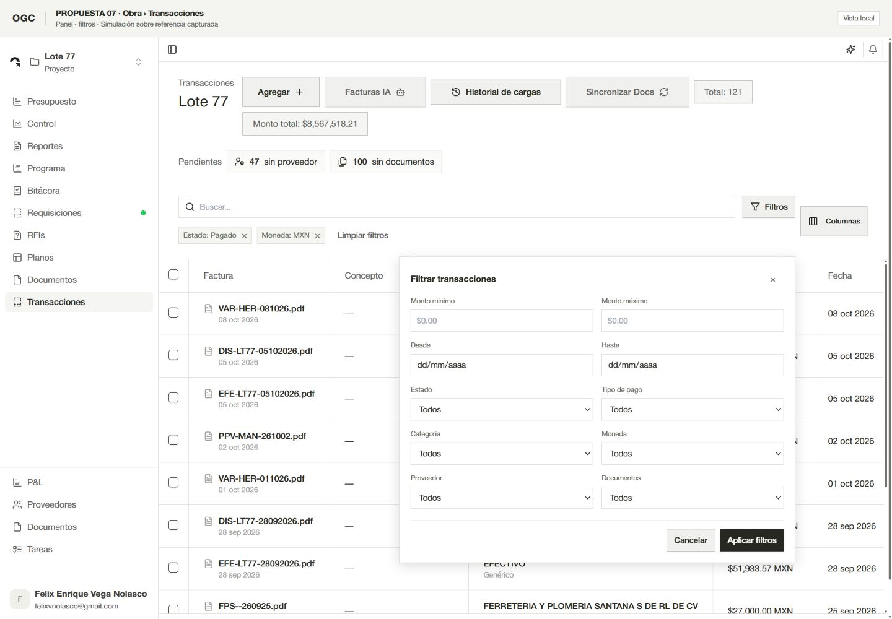
Beneficio: Seguir viendo resultados y comprender qué está filtrado.
Ver móvil, evidencia y condiciones
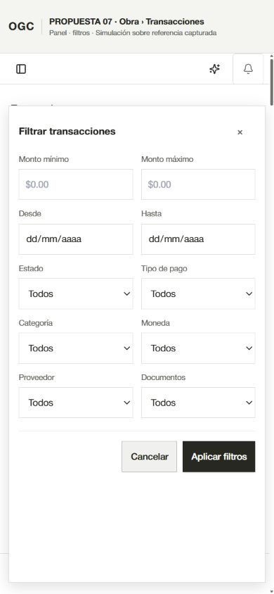
Problema: Al expandir filtros, nueve controles desplazan la tabla casi una pantalla.
Conservar: Los valores aplicados persisten al cerrar el panel; Limpiar filtros sigue disponible. Aplicar y Cancelar sólo aparecen en el simulador de esta propuesta, sin cambiar la semántica real hasta implementarla.
src/pages/ProyectoTransaccionesTable/ProyectoTransaccionesTablePage.tsx
Programa › Página · barra de herramientas
Archivo reúne importación, historial y exportación
Mover historial dentro de Archivo y usar altura compacta para las herramientas. Mantener búsqueda, estado, Hoy y Vista accesibles.
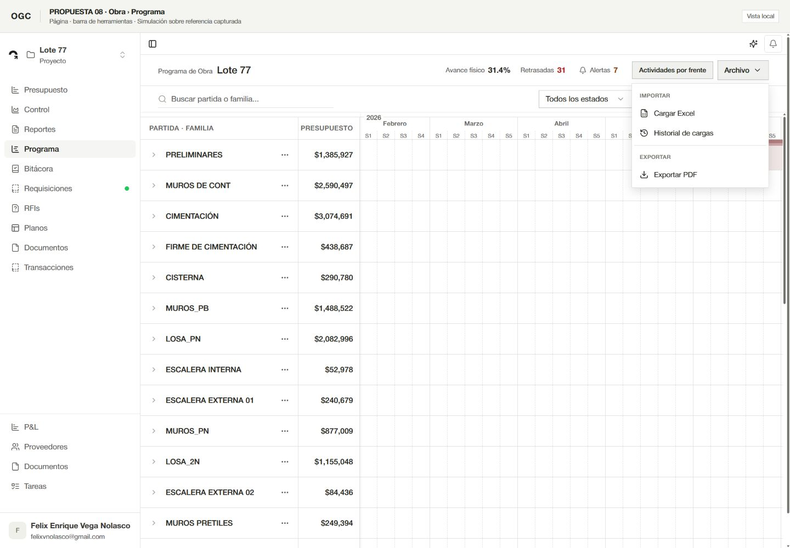
Beneficio: Más espacio para el Gantt y agrupación coherente.
Ver móvil, evidencia y condiciones
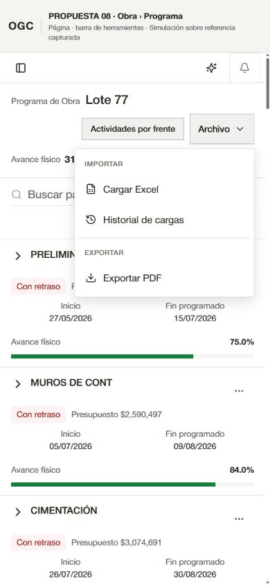
Problema: Historial de cargas está separado de Archivo, aunque ambos pertenecen al mismo trabajo con archivos.
Conservar: Alertas y retrasos siguen visibles; Actividades por frente se conserva. No ocultar las herramientas de edición por fila.
src/pages/Programa Obra/ProgramaObra.tsx
Bitácora › Página · selector de vista
Un selector de vista compacto en Bitácora
Usar un control segmentado compacto para la vista; conservar Agregar reporte como principal y los accesos de categoría como atajos contextuales.
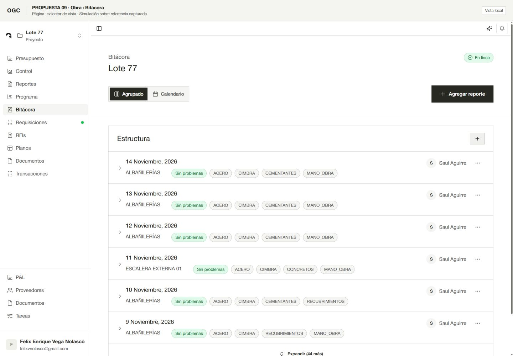
Beneficio: Distinguir consulta de creación sin ocultar funciones.
Ver móvil, evidencia y condiciones
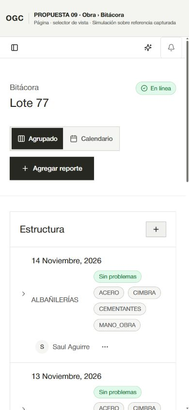
Problema: Agrupado y Calendario tienen el mismo peso visual que Agregar reporte.
Conservar: El estado En línea y los avisos offline continúan visibles. Las acciones de conflictos de sincronización no se guardan en un menú genérico.
src/pages/Bitacora/BitacoraPage.tsx
Requisiciones › Página · cabecera
Nueva requisición visible y utilidades agrupadas
Dar prioridad a Nueva requisición y agrupar seguimiento en «…». Conservar el indicador de novedades al lado del disparador.
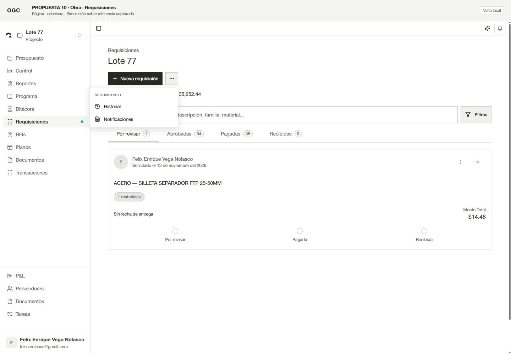
Beneficio: Entrada clara al flujo sin perder las novedades.
Ver móvil, evidencia y condiciones
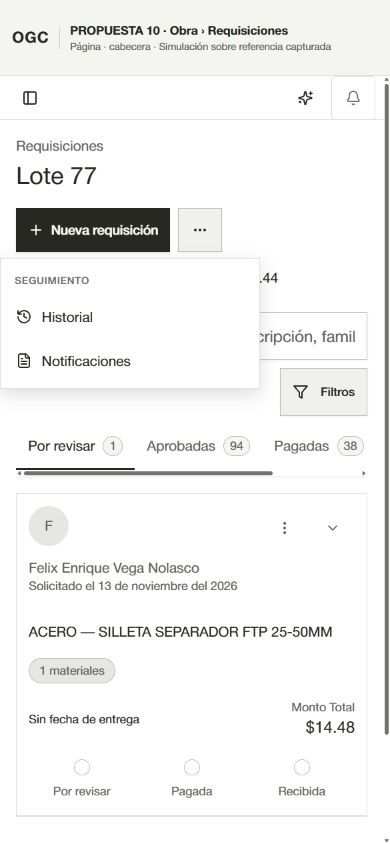
Problema: Notificaciones, Historial y Nueva Requisición usan el mismo tamaño y estilo.
Conservar: Contadores de estados, permisos de solicitante/almacenista y filtros actuales. No cambiar estados desde la cabecera.
src/pages/ProyectoRequisiciones/ProyectoRequisicionesPage.tsx
Requisiciones › Tarjeta · acciones de estado
Distinguir el avance de las acciones que lo modifican
Conservar el avance como información y reunir sus operaciones con verbos dentro del menú de la tarjeta. Mantener las revisiones y confirmaciones existentes.
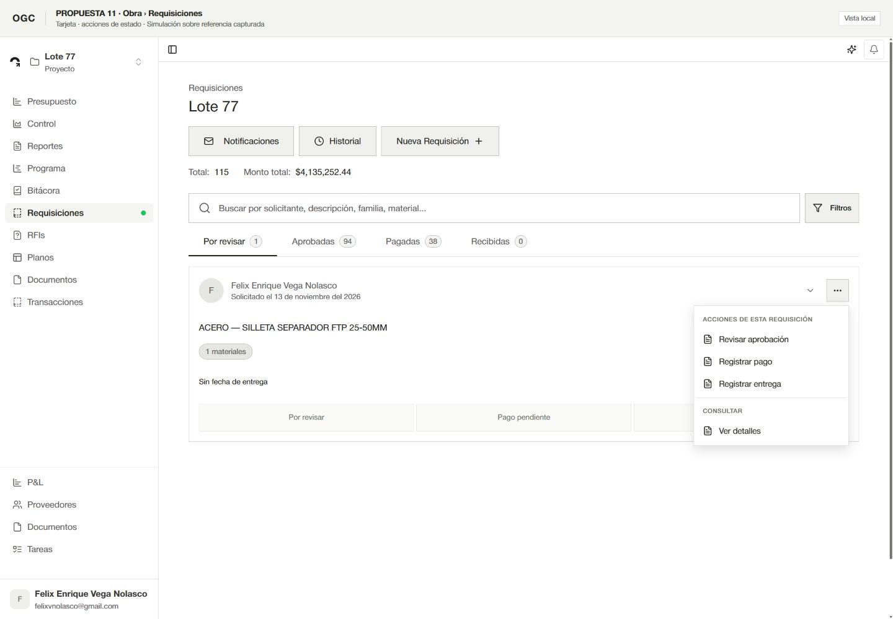
Beneficio: Hacer explícita la consecuencia de cada acción.
Ver móvil, evidencia y condiciones
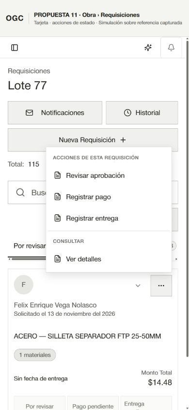
Problema: Los círculos Por revisar, Pagada y Recibida se parecen a indicadores; no explican claramente que permiten acciones.
Conservar: Sólo mostrar operaciones permitidas para el rol y estado. No saltar aprobaciones, pagos ni entregas; ninguna selección de la simulación modifica datos.
src/pages/ProyectoRequisiciones/ProyectoRequisicionesPage.tsx
RFIs › Página · filtros de estado y creación rápida
Estados compactos y Continuar con etiqueta visible
Un selector Estado, el filtro Mi responsabilidad y una acción Nueva RFI. En creación rápida, mostrar Cancelar y Continuar con texto.
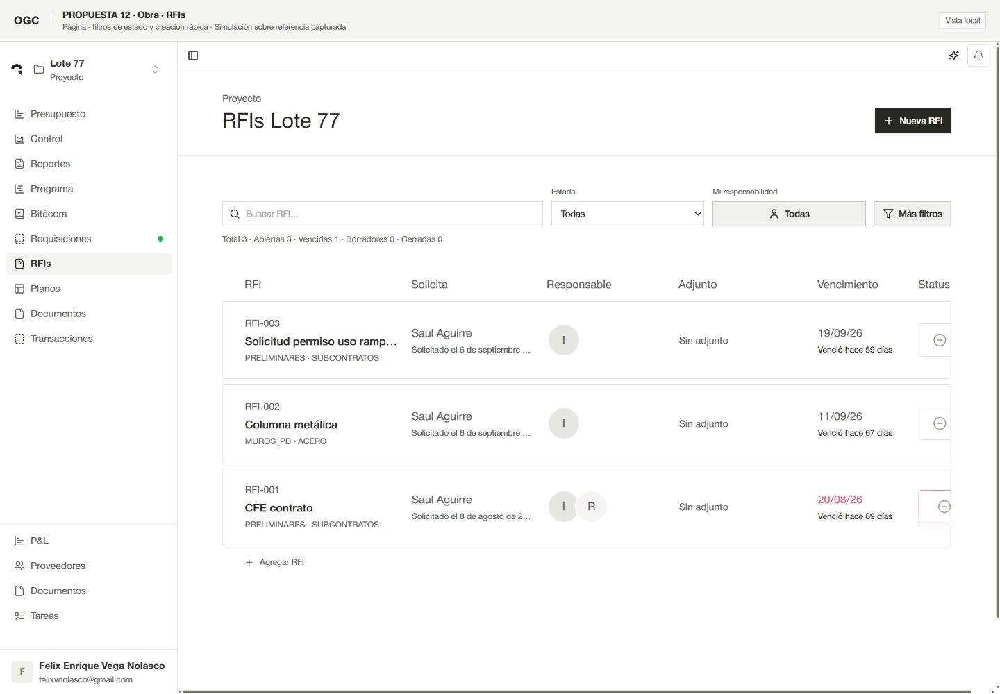
Beneficio: Filtros legibles y acciones de creación que no quedan fuera de pantalla.
Ver móvil, evidencia y condiciones
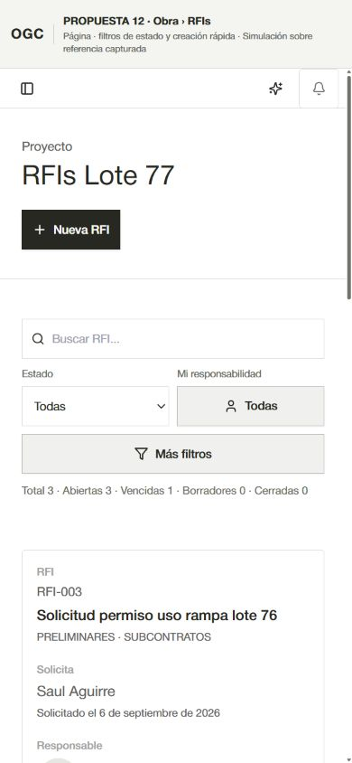
Problema: Seis controles de filtro y la fila de creación rápida exceden el ancho visible; Continuar es sólo un icono.
Conservar: Contadores, búsqueda y rutas de detalle; Continuar debe informar que crea un borrador. No se crea ningún borrador en esta auditoría.
src/pages/RFIs/RFIListPage.tsx
RFIs › Diálogo · detalle
Hacer explícitas las transiciones de estado de RFI
Etiquetar la acción como Cambiar a abierta y mantener Editar RFI en un menú secundario. Mostrar siempre el estado actual.
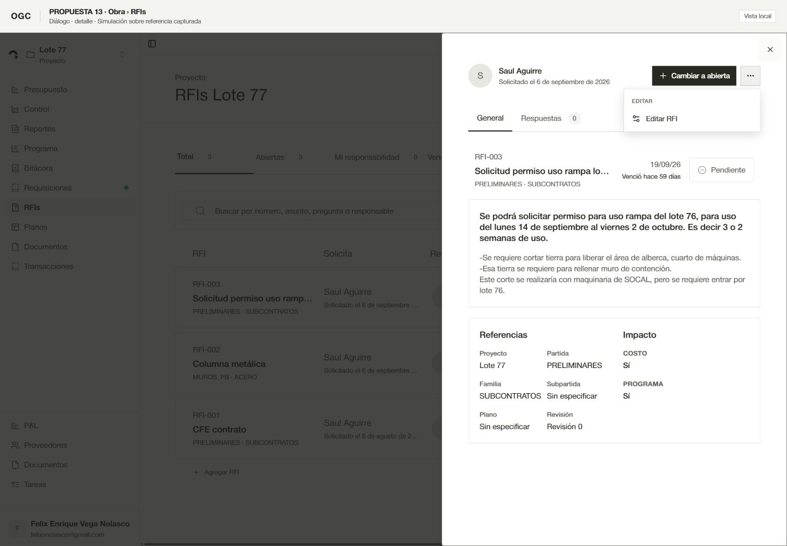
Beneficio: Evitar ambigüedad antes de cambiar el estado.
Ver móvil, evidencia y condiciones
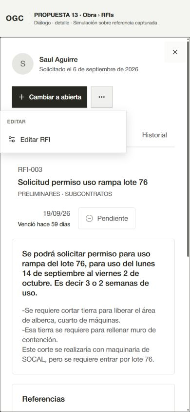
Problema: Abrir RFI puede interpretarse como navegar al detalle, pero es una transición del flujo.
Conservar: La transición continúa pasando por la revisión existente; las acciones dependen del estado y los permisos. Las acciones importantes de respuesta/revisión permanecen visibles en su contexto.
src/pages/RFIs/RFIDetailPage.tsx
src/pages/RFIs/RfiActionReview.tsx
Planos › Página · biblioteca
Un menú Cargar para plano o carpeta
Un menú Cargar con las dos modalidades y un acceso secundario de seguimiento identificado.
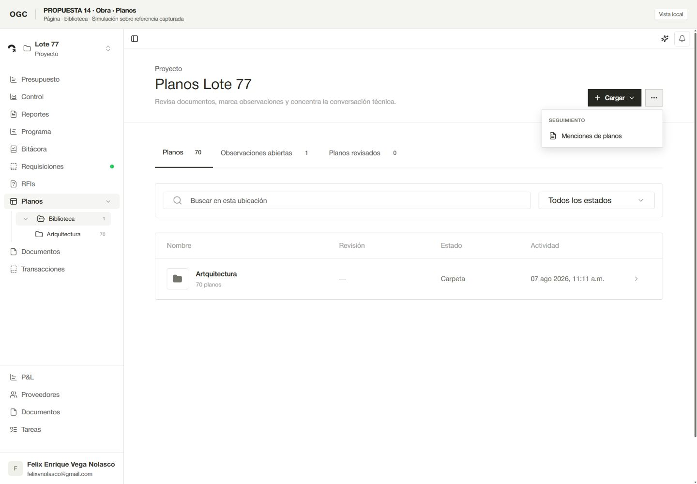
Beneficio: Un punto de entrada claro a las cargas.
Ver móvil, evidencia y condiciones
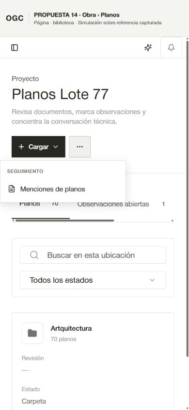
Problema: Tres botones amplios ocupan la cabecera antes de los filtros.
Conservar: La carga de carpeta conserva selección, validación y revisión; menciones globales y del módulo mantienen sus alcances.
src/pages/Planos/PlanosPage.tsx
src/pages/Planos/FolderPlanUploadDialog.tsx
Planos › Visor · acciones del archivo
Separar herramientas del plano y gestión del archivo
Agrupar la gestión del archivo en «…» y dejar seleccionar, dibujar, zoom y paginación en la barra del visor. Eliminar queda al final y separado.
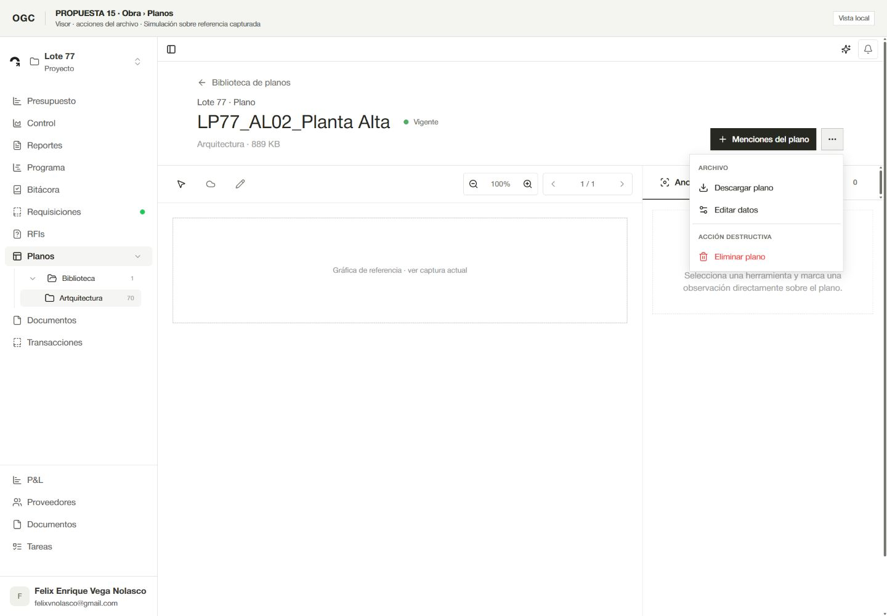
Beneficio: Más espacio para trabajar sobre el plano y menor riesgo de confusión.
Ver móvil, evidencia y condiciones
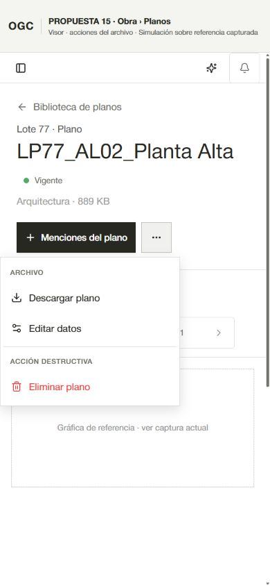
Problema: Descargar, Editar y Eliminar compiten con las herramientas del visor y con la información del plano.
Conservar: Eliminar conserva la confirmación y los permisos actuales. El menú no reemplaza herramientas que se usan repetidamente al anotar.
src/pages/Planos/PlanosPage.tsx
Documentos › Página · cabecera y vista
Un punto de entrada para agregar contenido
Un menú Agregar con ambas opciones y un selector de vista compacto con etiquetas o ayudas claras.
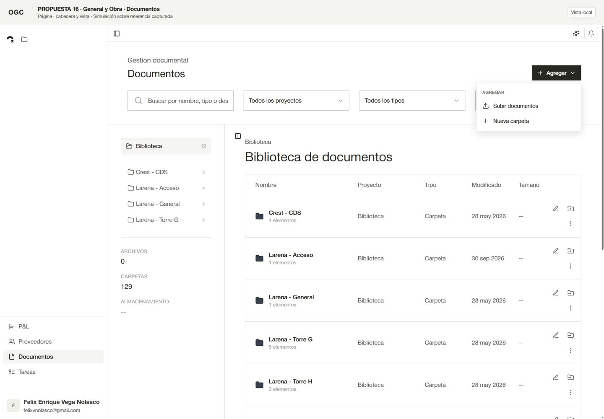
Beneficio: Cabecera más corta y controles de vista comprensibles.
Ver móvil, evidencia y condiciones

Problema: Nueva carpeta y Subir documentos ocupan espacio equivalente; los iconos de lista y cuadrícula carecen de texto visible.
Conservar: La ubicación de la carpeta actual, filtros de proyecto/tipo y estados de carga. Guardar y Cancelar de los diálogos permanecen visibles.
src/pages/Documentos/DocumentosPage.tsx
src/pages/ProyectoDocumentos/ProyectoDocumentosPage.tsx
Documentos › Tabla · acciones de carpeta/archivo
Un menú por fila sin acciones duplicadas
Un único menú de acciones por fila. Mantener el nombre como acceso para abrir y dejar Eliminar separado al final.
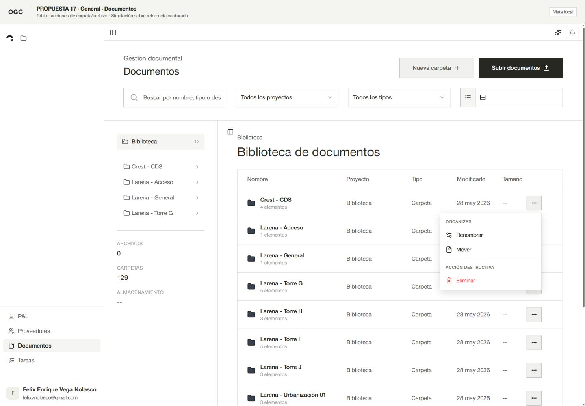
Beneficio: Reducir tres controles a uno y eliminar duplicidad.
Ver móvil, evidencia y condiciones

Problema: Cada fila muestra iconos para renombrar y mover, además de un menú que vuelve a ofrecer esas acciones.
Conservar: Diferenciar carpetas y archivos, permisos y confirmaciones. El nombre accesible del menú identifica el registro.
src/pages/Documentos/DocumentosPage.tsx
Proveedores › Página · cabecera
Nuevo proveedor y herramientas de catálogo
Mantener Nuevo proveedor visible y agrupar importación y sincronización en «…».
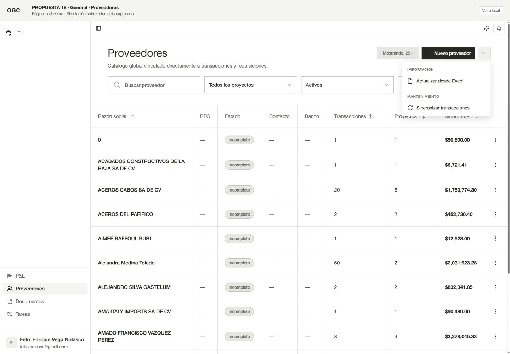
Beneficio: Una sola línea de acciones en escritorio y dos controles claros en móvil.
Ver móvil, evidencia y condiciones
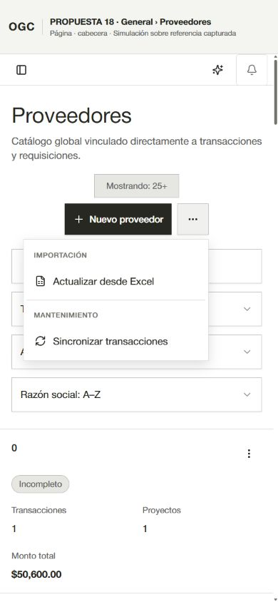
Problema: Las dos herramientas largas desplazan Nuevo proveedor a otra línea.
Conservar: Confirmaciones de sincronización y fusión; filtros y ordenamiento se conservan. Archivar/reactivar sigue en el contexto de cada proveedor.
src/pages/ProveedoresTable/ProveedoresTablePage.tsx
P&L › Página · herramientas
Herramientas financieras con nombres claros
Mantener Cargar movimientos y poner los accesos secundarios con texto en un menú. Conservar ubicación visible.
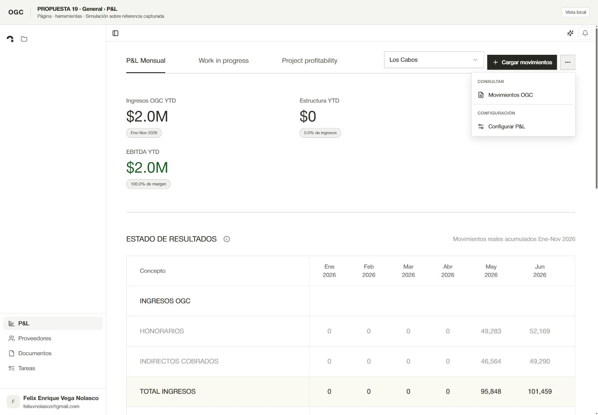
Beneficio: Reducir controles ambiguos sin alterar las vistas financieras.
Ver móvil, evidencia y condiciones
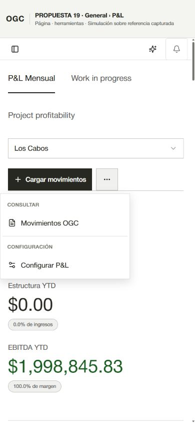
Problema: Configuración y Ledger se representan sólo con iconos junto a pestañas, ubicación y carga.
Conservar: Los supuestos se reflejan inmediatamente, como hoy; no presentar un falso Guardar. Restablecer conserva su significado y debe diferenciarse de cerrar.
src/pages/ProfitAndLoss/ProfitAndLossPage.tsx
Autorizaciones › Tarjetas · documentos y responsables
Acciones documentales identificadas por nombre
Un menú Documento con verbos completos para las utilidades y un acceso explícito Asignar responsable. Conservar el estado de cumplimiento visible.
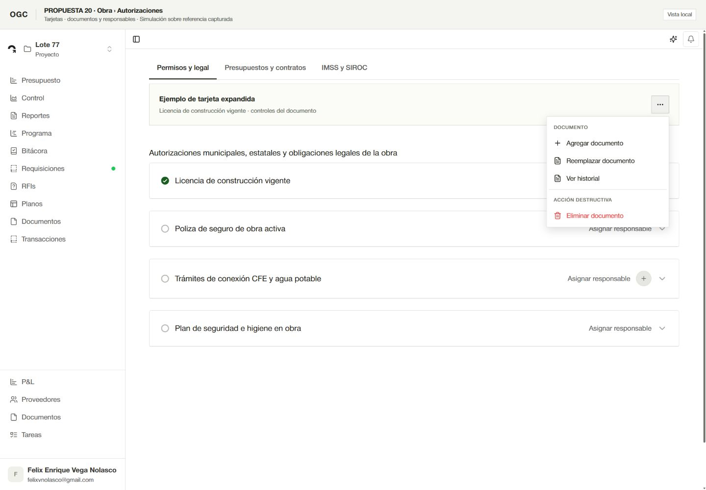
Beneficio: Comprender qué hace cada icono y compactar controles repetidos.
Ver móvil, evidencia y condiciones
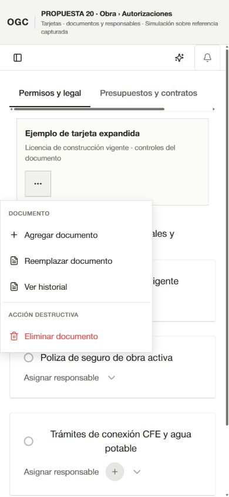
Problema: Las tarjetas utilizan iconos pequeños para reemplazar, consultar historial o retirar documentos; algunos botones no tienen nombre accesible en el DOM.
Conservar: No mover los indicadores de cumplimiento a acciones genéricas. Mostrar sólo opciones disponibles según documento y permisos; la simulación es ilustrativa para las tarjetas expandidas.
src/pages/AutorizacionesObra/PermisosYLegalTab.tsx
src/pages/AutorizacionesObra/PresupuestosContratosTab.tsx
src/pages/AutorizacionesObra/ImssYSirocTab.tsx
Flujo › Página · origen e historial
Origen e historial dentro de Archivo
Un menú Archivo junto a la referencia del Excel, con origen vigente e historial.
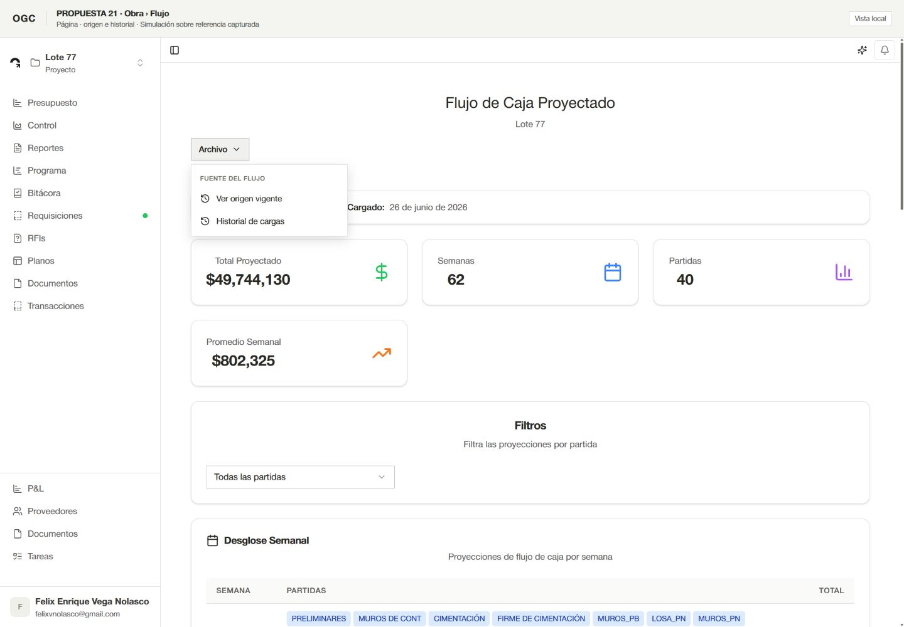
Beneficio: Asociar las acciones con su documento de origen.
Ver móvil, evidencia y condiciones
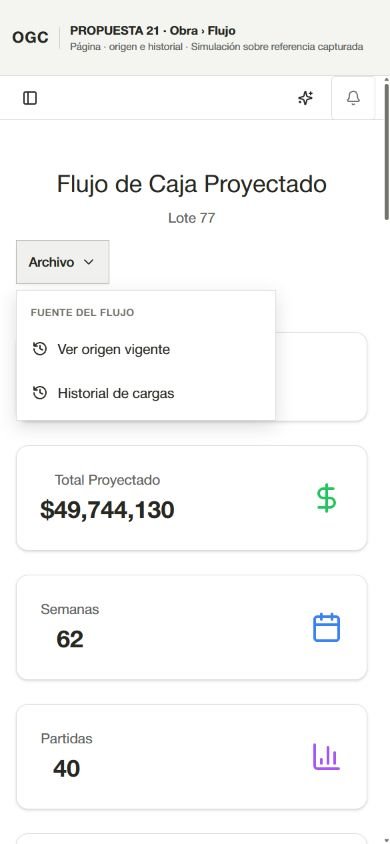
Problema: El historial y la fuente vigente aparecen como controles de distinto estilo separados de los datos del archivo.
Conservar: El archivo vigente, su fecha y el filtro por partida siguen visibles. El patrón también aplica a cobros de ventas, pendiente de validar con un proyecto accesible.
src/pages/ProyectoFlujo/ProyectoFlujoPage.tsx
src/pages/SalesProyectoFlujo/SalesProyectoFlujoPage.tsx
Documentos › Página · cabecera
Retirar la acción que todavía no está disponible
Conservar Subir documentos como entrada única y retirar de la cabecera la función pendiente hasta que tenga un flujo implementado.
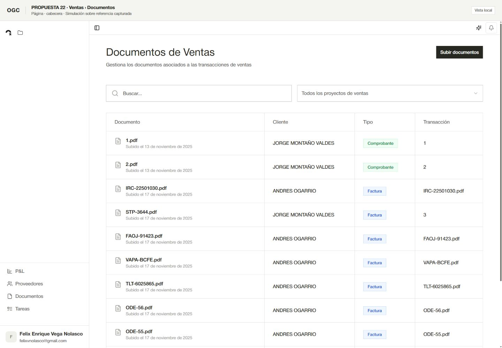
Beneficio: Eliminar un botón que no permite completar una tarea.
Ver móvil, evidencia y condiciones
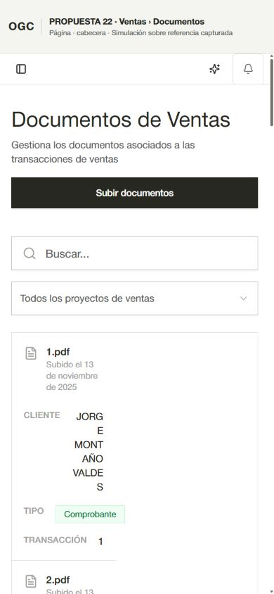
Problema: Agregar Documento sólo muestra un aviso de «próximamente», mientras Subir Documentos inicia el flujo disponible.
Conservar: El flujo actual de carga y los permisos; no crear una función nueva como parte de esta propuesta.
src/pages/Documentos/SalesDocumentosPage.tsx
Diálogos › Diálogo · edición de partida
Nombres específicos y escala consistente en el pie
Etiquetas como Guardar cambios, Crear carpeta o Guardar proveedor; tamaño compacto en escritorio y área táctil suficiente en móvil. Conservar acción principal y Cancelar en el pie.
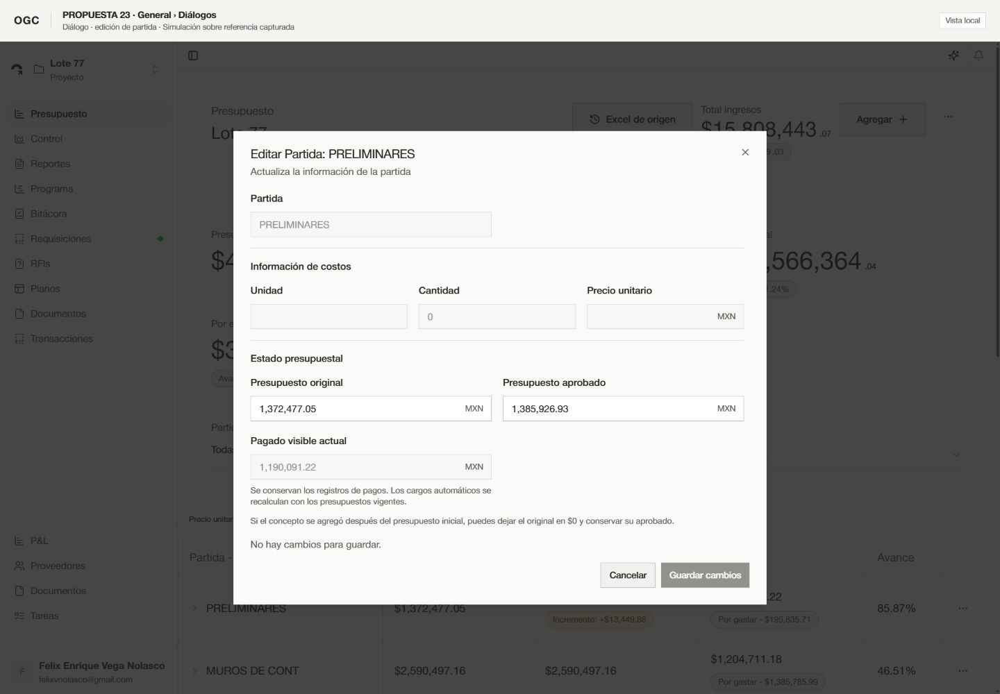
Beneficio: Anticipar el resultado y reconocer el patrón entre formularios.
Ver móvil, evidencia y condiciones
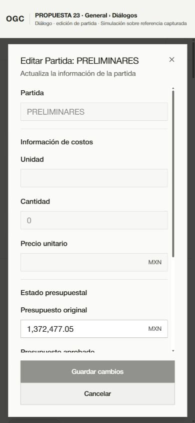
Problema: Actualizar, Crear y Guardar cambian de etiqueta y tamaño entre formularios, sin nombrar el objeto afectado.
Conservar: Sin cambios sigue deshabilitado; no ocultar confirmaciones ni botones de guardar detrás de «…». En altas con Excel mantener explícito que se guarda el archivo original.
src/components/Forms/EditPartidaForm.tsx
src/pages/Documentos/DocumentosPage.tsx
src/components/modals/add-proyecto-modal.tsx
Presupuesto › Página · cabecera · referencia de código
Sincronizar como utilidad secundaria en ventas
Simular Sincronizar dentro de «…», con el mismo patrón de utilidades de obra.
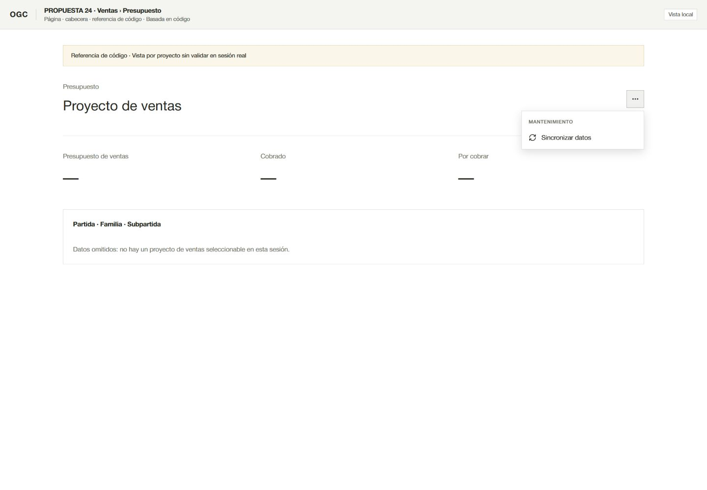
Beneficio: Consistencia entre módulos sin dar prioridad a mantenimiento.
Ver móvil, evidencia y condiciones
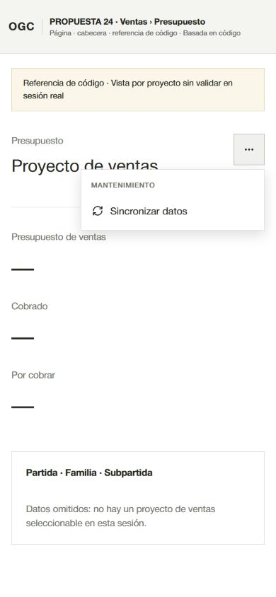
Problema: La implementación de presupuesto de ventas incluye Sincronizar como botón independiente. No se pudo abrir una vista real por proyecto de ventas.
Conservar: La propuesta está basada en código y necesita validación visual con un proyecto de ventas accesible antes de adoptarse.
src/components/Tables/SalesPresupuestoTable.tsx
Transacciones del proyecto › Página · cabecera · referencia de código
Agrupar importación y sincronización de ventas
Mantener Subir transacciones visible y reunir mantenimiento en «…». Usar el detalle de transacción como acceso a conceptos y documentos.

Beneficio: La misma jerarquía de acciones que en obra.
Ver móvil, evidencia y condiciones
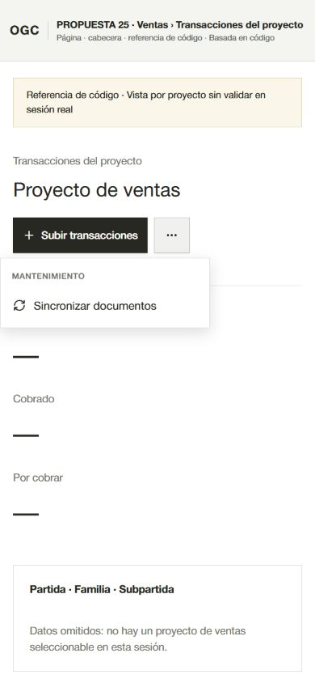
Problema: La página por proyecto separa Subir Transacciones y Sincronizar Docs. La sesión no permite seleccionar un proyecto de ventas para comprobarla.
Conservar: Simulación basada en código; no representa una captura real de un proyecto. Conservar los accesos actuales a detalles, conceptos y documentos y las confirmaciones de eliminación.
src/pages/SalesProyectoTransacciones/SalesProyectoTransaccionesPage.tsx
Tareas › Página · filtros
Estado y filtros sin duplicar controles
Una barra compacta con Estado, Responsable y Más filtros; mantener contadores y mostrar los filtros activos como chips. Nueva tarea sigue visible.
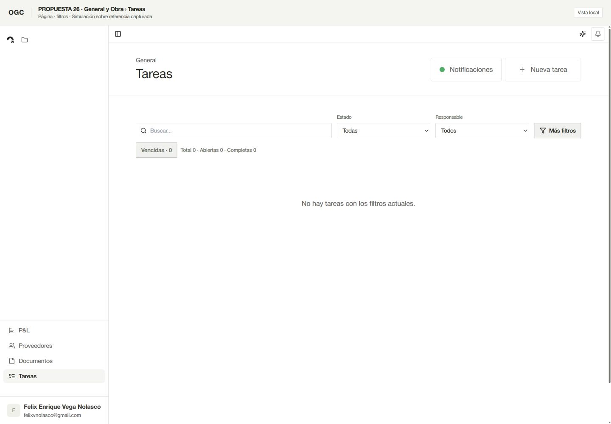
Beneficio: Menos controles repetidos y mejor lectura en móvil.
Ver móvil, evidencia y condiciones
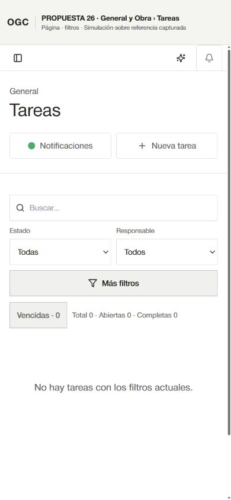
Problema: La fila Total/Abiertas/Vencidas/Completas y el selector Todos los estados se superponen como entradas para filtrar.
Conservar: Los filtros de estado y vencimiento no siempre son equivalentes: conservar la combinación «Vencidas» como filtro rápido independiente. La propuesta no elimina esa capacidad.
src/pages/Tareas/TareasPage.tsx
Presupuesto › Tabla · menú de partida
Consulta primero y eliminación al final
Ordenar consulta, edición y finalmente eliminación, separada visualmente. Nombrar el disparador Acciones de la partida correspondiente.
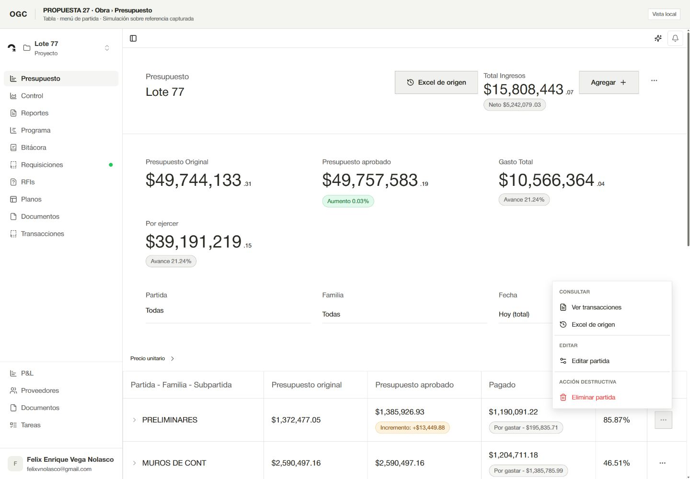
Beneficio: Lectura más predecible y acción destructiva claramente diferenciada.
Ver móvil, evidencia y condiciones
Problema: Eliminar partida aparece entre Editar partida y los accesos de consulta.
Conservar: No cambiar las condiciones de eliminación ni la revisión de impacto. Las opciones de familia/subpartida mantienen su contexto.
src/components/Tables/PresupuestoTable.tsx